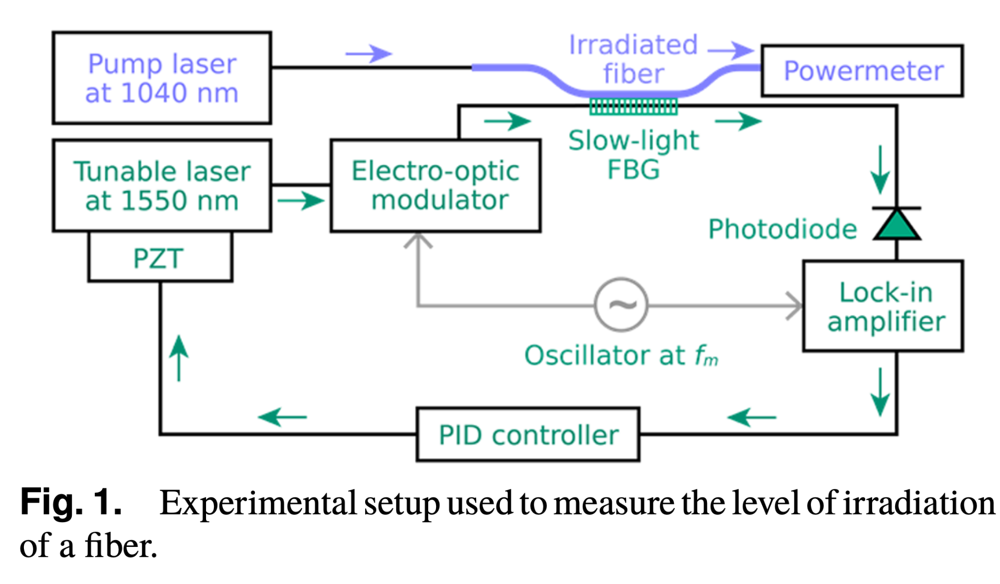
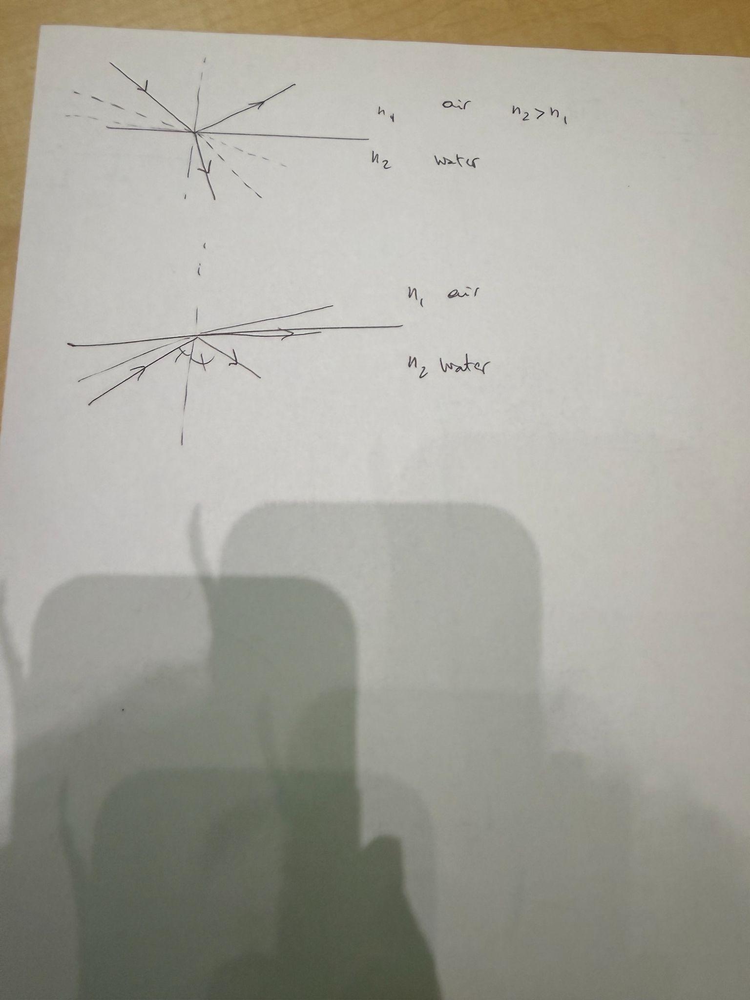
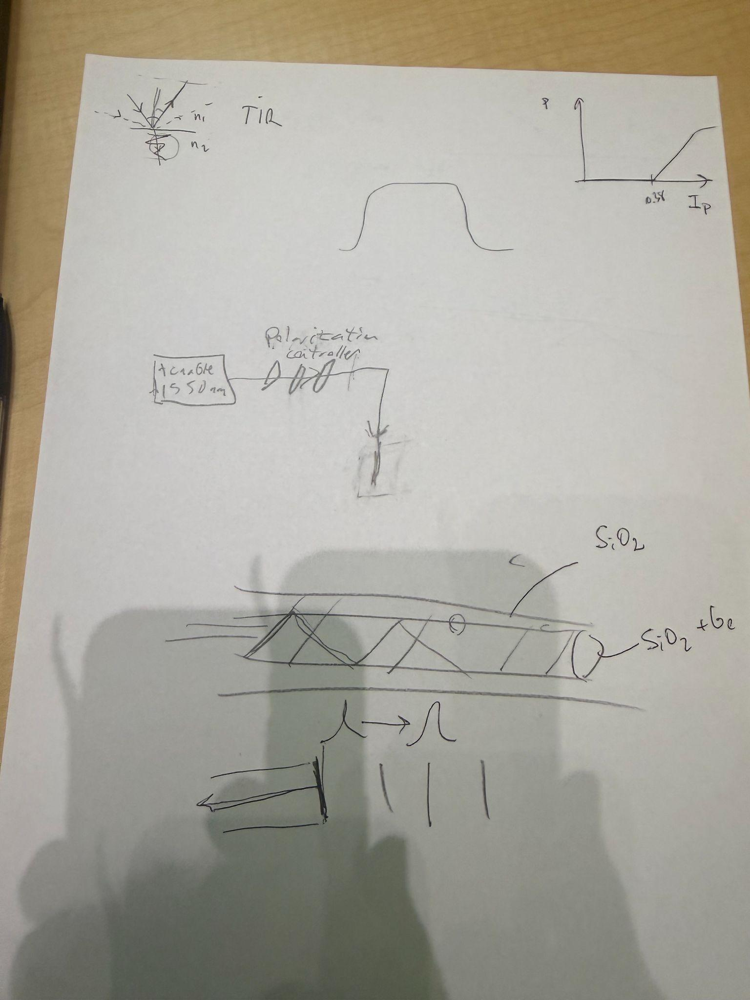
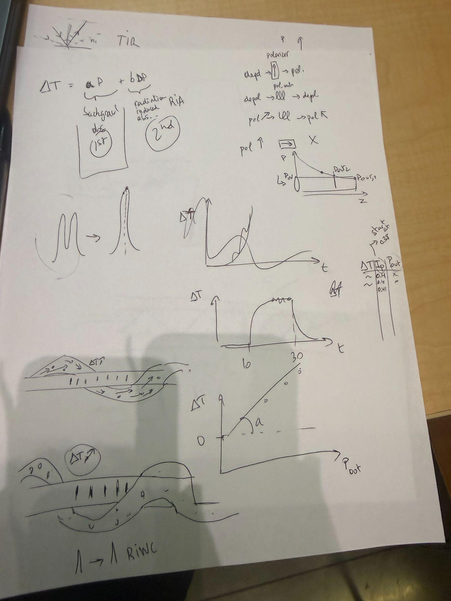
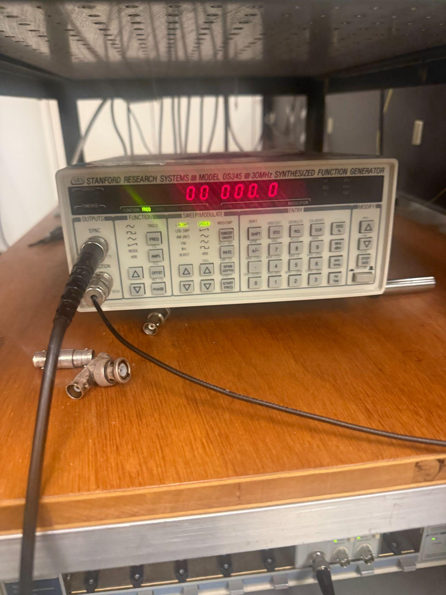
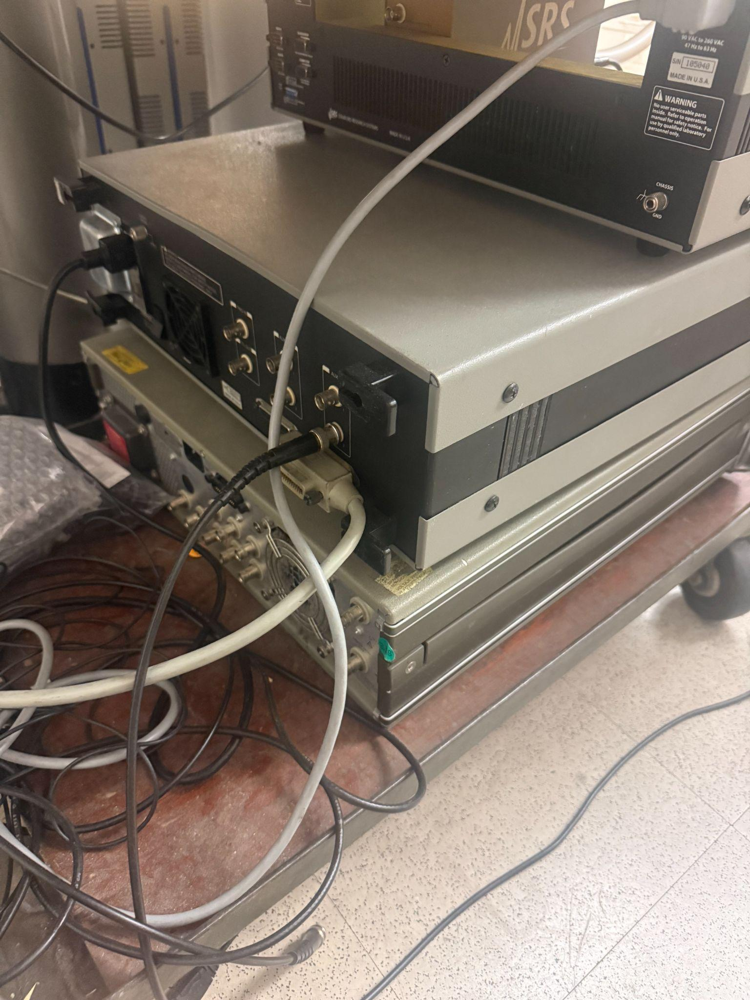
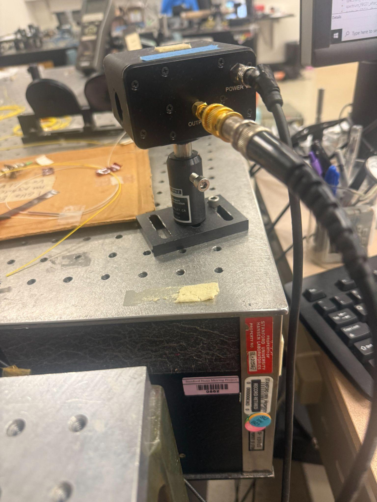

Photodetector Characterization Notes
7/8 Notes
Ok so there is an issue with the power output in the laser:
If we look at the current setup:

After measuring the light coming out of the APC connector, it is noted that the radius of the light is very wide on the infrared sensor card. There is also less power than expected. I redid the splice a couple of days ago with simon and got a lot more power output there, and it worked with a shorter test cord but as soon as I tried connecting it to the fiber I'm going to use in my experiment it broke again. Here's some data that I collected:
I only got 68 mW of power this time, which is concerning.
Also the light is very very scattered when I hold it to the paper:

Now I'm going to cut the fiber right after the splice, since I assume that the connector got damaged. Yes I replaced it and now it read over 300 mW and is much better and looks gaussian. Now I moved it back to 40mW. See the interesting thing is that when I connected it to the apc connector on the fiber to be irradiated it broke again. Maybe light was reflected back up which caused it to break again? Who knows.
Anyways so I've respliced it for a second time. So let me try to splice it to another pigtail. : (
And then I will do the same ig. And if it doesn't work well then idk.
This is before I respliced it though:
(it read about 48mW)
(the first image is the straight fiber before the splice and the second image is when I bent it to try to see if there was a breakage in the fiber)


When I bent it it read even higher at 55.6 mW.
Keep in mind both of these are giving me the same amount of power, which is around 48 mW. I will test the distance though, while curling and not curling (left and right):
7/9 Notes
Today is a continuation of yesterday in a sense. My goal is at least to finish testing for the second fiber and to fix all of the power issues.
I just retested the fiber that connects to the Isolator and it has a normal distribution and good centering for the light, along with a strong amount of power (~50 mW) for ~0.4 A. Now I'm planning on splicing it because I want to see if the connector is the problem. If the connector isn't the problem then I'm going to splice a new connector for the fiber that is to be irradiated.
Here's a picture of the new splice with the old connector.

If we turn on the pump @ 0.4 A...
It worked, which is absolute bonkers to me lmao.
Ok I just connected it and it works, which is awesome. Now I'm going to splice them together. If something goes wrong, that means there is probably a defect in the fiber to be irradiated.


Ok wow it worked. Here some pictures. Now my last concern is that putting it in the thing (like the holder thing will somehow break it but this is unlikely). Here are more documenting pictures.
Now time to plug it in:
And it worked!!!! Yay!
Now I'm going to lock:
Ended up unlocking and then relocking after I got some stuff to eat since I hadn't eaten yet today.
- 4:39 pm rn and I'm locking again.
Now I'm doing some tests with 0 pump power and here are some pictures : )
Now let's do some with 40,41,... yippee
Here's some pictures at 0.4 A vs 0.55 A, little difference means low background absorption : D
Ok this fiber was very very good. I realized since it had such a low absorption, this means that there was so much noise when it was at low power. My R^2 was at 0.93 when I stopped art around 310 mW and then is now at 0.97 when I'm at 435 mW. Here's how it looks rn : D
The slope is like twice as good as Bastien's 2 years ago lmao. Very satisfying after it literally not working.
Actually here's a picture of what it looked like a while ago:
Final graph:
7/10 Notes
Ok I'm back in the lab again today. I'm going to measure the length of the fibers so that I can find out how much power is dissipated along a certain section of the wire. These lengths will be available on my spreadsheet. Nvm i'm just gonna wrzap
7/15 Notes
Here is some data that I collected vs old data. I think that the old power meter wasn't as sensitive as the new one so it didn't accurately catch the amount of power that was going through the fiber:
Here is the old vs new SG1744L fiber:
Here is a comparison of the temperature difference when at the same amount of pump current, which is pretty similar:
Here is the old vs new for the MS30A1 fiber:
Here is a comparison of the temperature difference when at the same amount of pump current, which is pretty similar:
7/17 Notes
Today is a continuation of yesterday in a sense. My goal is at least to finish testing for the second fiber and to fix all of the power issues.
So basically I need to see how sensitive the photodetectors are because the data I got on the MS30A1 fiber (on photodetector 1 vs photodetector 2) is a lot different. If I compare the data that I get on P_out vs I on the MS30A1 fiber, I get a ratio of slopes that is equal to 1.94647965811. Now we can compare the normalized graph vs the initial readings.
However, the ratio for the SG1744L, which should be about the same, was different. This is interesting. I'm thinking it might be because of a slight difference in set-up for one of the photodetectors. Tomorrow I'm going to gather data on how the spatial location impacts the reading of the second photodetector, and possibly the first one as well. For this fiber I got a ratio of 1.43567658. Interestingly, when we renormalize it with this value, the slopes are very similar:
Now we will do the same comparisons for the SG1744L fiber: